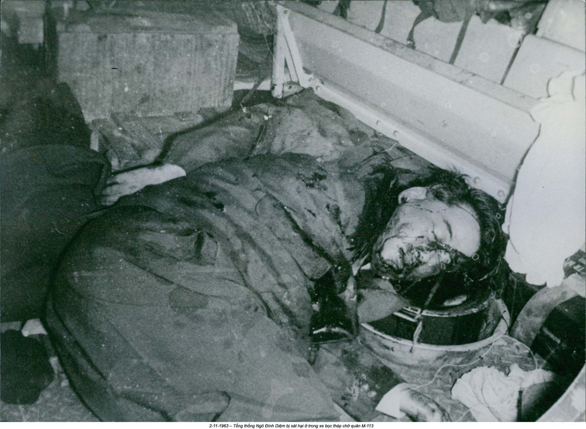
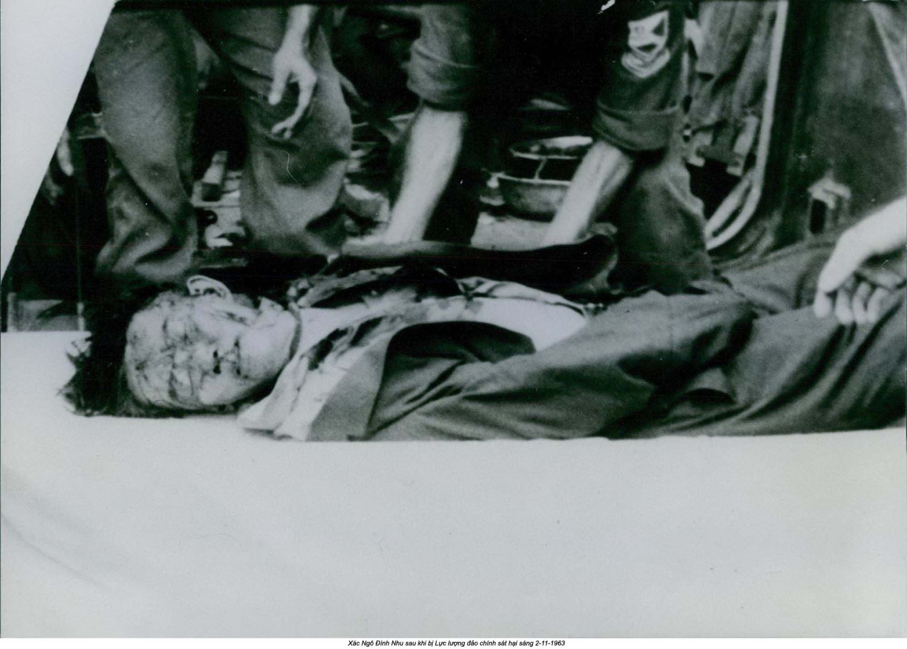
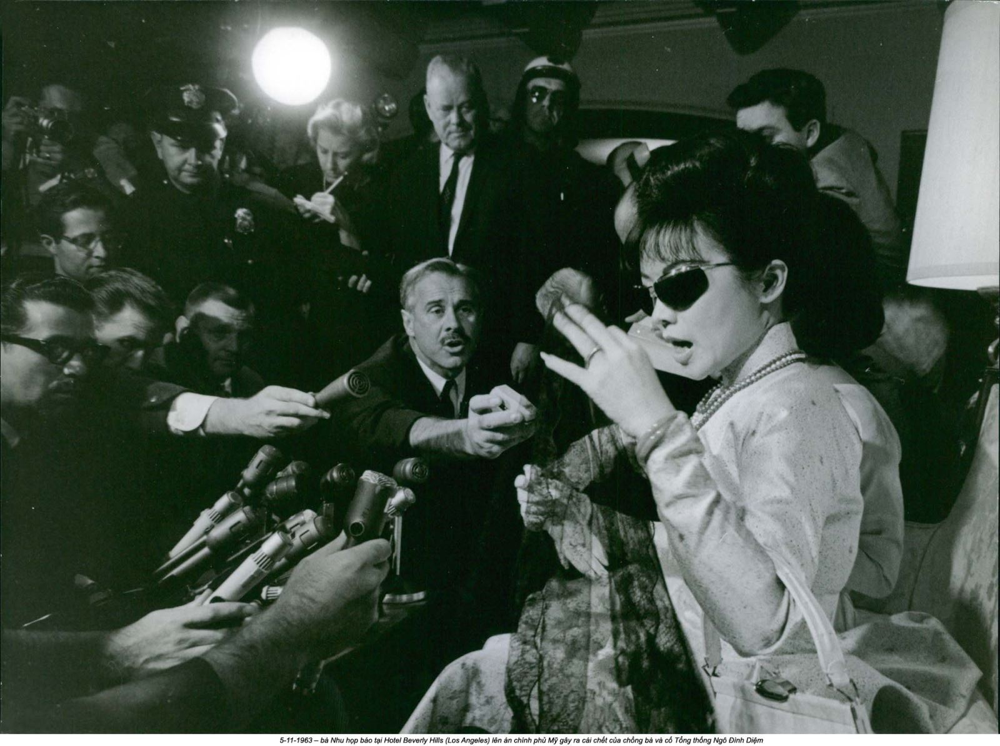
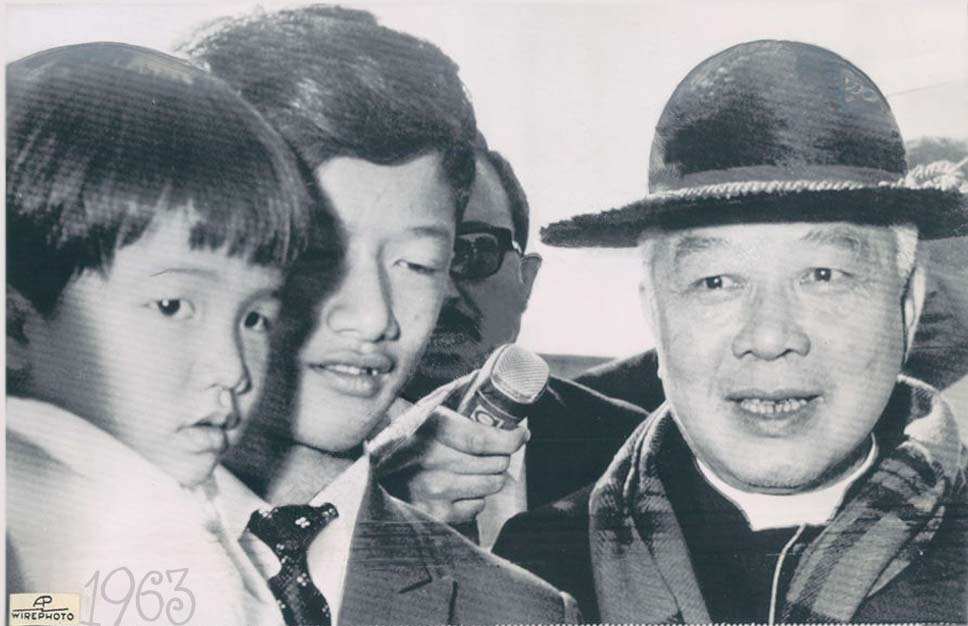

Chương 15

ần một năm đã trôi qua kể từ khi bà Nhu và tôi không còn liên lạc với nhau nữa. Khi tôi bắt đầu gọi lại vào mùa hè năm 2010, có vẻ như không có chuyện gì xảy ra. Tôi làm bộ vồ vập, như bà hoàn toàn kỳ vọng, nhưng rồi sự sẵn lòng của tôi đến thật bất ngờ. Tôi thấy ngồ ngộ là mình đã nhớ bà rất nhiều nhưng lại sợ quay lại trong ê chề.
Giọng bà Nhu nghe trầm sâu. Lần đầu, giọng bà nghe đúng như người đàn bà tám mươi tuổi. Bà bệnh lâu nay, bà nói; bà đã phải mổ chân và đi khỏi Paris. Tôi đoán có chuyện gì đó đã xảy ra với bà. Khi tôi gọi bà ba tháng sau ngày bà không nói chuyện với tôi nữa và dứt khoát sẵn sàng xin lỗi vì sự bộc phát của mình, tôi nhận được một giọng nói chuẩn quốc tế cho biết số điện thoại ấy không còn hoạt động nữa. Thoạt tiên tôi lo lắng một chuyện tồi tệ đã xảy ra. Tôi lướt qua các cáo phó hằng ngày, nín thở rồi thở ra nhẹ nhõm khi không thấy tên bà với phông chữ đậm. Tôi không hình dung được rằng bà sẽ thay đổi số điện thoại chỉ vì những bất hòa của chúng tôi. Nhưng tôi cũng không tưởng tượng được rằng bà đi đâu xa lâu như vậy mà không gọi cho tôi. “Quá đủ để làm thiên thần của bà rồi, và quá đủ để nói về những hồi ức đó rồi - hay đại loại vậy”, tôi nghĩ.
“Các con tôi”, bà nói để giải thích sự im lặng của bà, “chúng muốn tôi gần gũi hơn. Hiện tôi sống ở Rome”. Bà nói huyên thuyên về những tin tức mấy tháng qua, những vấn đề về sức khỏe của bà, và nói thêm, gần như để giải thích thêm, nhân tiện cuốn hồi ký đã hoàn thành. Bà sẵn sàng gởi cho tôi.
Có một số khó khăn về kỹ thuật giữa cuộc trò chuyện đó và việc tôi nhận được những hồi ức qua hộp thư điện tử của tôi, một cái gì đó liên quan đến các con bà và những công việc toàn thời gian của họ và, tôi đoán, lòng kiên nhẫn của họ đang cạn kiệt đối với dự án làm hồi ký của mẹ. Về lý trí, tôi không thể giải thích nỗi ám ảnh của tôi đối với việc lấy được câu chuyện của bà Nhu, nhưng cho đến năm 2010, có lẽ chính vì tôi đã bỏ quá nhiều thời gian, gần năm năm, hy vọng và chờ đợi đã trở thành một thói quen khó từ bỏ. Tôi hy vọng những hồi ức đó sẽ lấp đầy trí tò mò của tôi về bà Nhu. Tôi sẽ hiểu bà, tôi sẽ đưa được bà vào đúng bối cảnh, và tôi có thể đặt cái dấu kiểm gọn gàng bên cạnh tên bà trên bảng kiểm kỷ cục, đầy ám ảnh của tôi, và có thể đi tiếp.
Thay vì vậy, hai tập hồi ký gởi đến hộp thư của tôi làm tôi bối rối. Cái tựa đề chẳng giúp được gì: Le Caillou Blanc, hay Viên sỏi trắng. Sau này mẹ tôi làm rõ một chút ý nghĩa cái tựa đó cho tôi. Ở Pháp, người ta nói về một sự kiện quan trọng rằng ngày tháng của nó được đánh dấu bằng một viên sỏi trắng. Nhưng khi cuộn dần xuống các trang thì như là đang đọc một cái gì đó viết bằng mật mã. Có những mẫu tự và con số đặt trong ngoặc đơn, những tham chiếu từ kinh thánh bằng những đề mục viết chữ đậm, và những phụ đề viết nghiêng được sắp xếp theo thứ tự thời gian. Có vẻ như bà Nhu đã có một danh mục lớn những biến cố về đời bà, nhưng nó là một mê cung khó có thể giải mã được - chưa nói đến trở ngại để có được cái đại tự sự của bà Nhu.
May mắn thay, bà đã gởi những tấm ảnh. Tôi nhìn chúng thật kỹ, ước gì mình có thể nghe các nhân vật cất lên tiếng nói. Có một tấm ảnh chụp bà lúc mười tám tuổi, trước ngày cưới của mình, khoảnh khắc trước khi mọi thứ thay đổi. Ngắm kỹ chân dung bóng loáng của chồng bà, lần đầu tiên tôi nhận thấy ông Nhu, người được mệnh danh là Rasputin của Việt Nam, có cái mũi hạt nút hơi hếch lên. Thay cho cái vẻ lạnh lùng và đầy đe dọa, may quá, ông dễ mến.
Các phần trong văn bản của bà Nhu vốn giống với một hồi ký thông thường được phân bố rải rác trong gần hai trăm trang, nhưng những phần có giá trị tự thuật thì rất đáng đọc. Đây dứt khoát không phải là hồi ký mà nghe nói bà đã bán cho tờ Saturday Evening Post trong những ngày sau vụ đảo chính 1963; cũng không phải là hồi ký mà bà Nhu đang viết khi bà quá bận rộn để trả lời phỏng vấn báo chí vào những năm 1960 và 1970 với giá không ít hơn 1.000 đô la một lần. Tôi không tin rằng những trang viết này đã tồn tại đâu đó dưới dạng bản thảo giấy. Nếu bà đã từng viết chúng thì bà viết ở trong đầu. Hai tập gởi bằng email đến tôi hình như đã được khởi thảo gần đây, thậm chí có lẽ trong những tháng từ sau lần nói chuyện gần đây nhất cùa chúng tôi. Tôi đã không biết nhiều chuyện.
Bà Nhu tự mô tả mình đang viết ở bàn viết; bà viết về những lần té ngã và u đầu. Thật đau lòng khi đọc về tình trạng dễ tổn thương và già nua của bà. Bà nói về những cuộc cãi cọ về đất đai ở Ý giữa Trác, con trai bà, và những người láng giềng, những người đang tìm cách lấn chiếm cơ ngơi của họ. Nhưng khi bà quay về chìm sâu vào vùng đất màu mỡ của ký ức, bà gợi lại những chi tiết lấp lánh, như cơn mưa nặng hạt ở Đà Lạt làm ướt sũng cái ba lô của Lệ Thủy trên đường cô đến trường. Hay chiếc xe ngựa kéo dễ thương của bà, với những cái bánh xe to đến mức tôi có thể dễ dàng hình dung mình ngồi vào chỗ của bà, nhún nhảy dọc con kênh ở Huế, có gì đó giống như cô bé Lọ Lem trên đường đến dạ tiệc khiêu vũ. Tuy nhiên cách viết của bà không theo tuyến tính; có lúc gần như không mạch lạc. Nhưng nếu chúng ta không bị cuốn đi theo dòng chảy gấp gáp của các sự kiện, thì nó rất hấp dẫn. Tôi gợi ý với bà rằng nếu bà hy vọng có nhiều người đọc, tập bản thảo này cần phải biên tập nhiều, nhưng đó sẽ là những phần bổ sung hấp dẫn cho hồ sơ lịch sử.
“Không”. Giọng bà gay gắt và hơi thở bà mệt nhọc, bà hết sức cương quyết và lạnh lùng cắt đứt những lời huyên thuyên của cuộc trò chuyện buổi sáng lẽ ra vui vẻ giữa hai chúng tôi. “Tôi tuyệt đối tin tưởng giao cho cô cuốn hồi ký này. Cô hoàn toàn chịu trách nhiệm. Nhưng sẽ không được biên tập gì cả. Không được thay đổi gì hết. Chúng phải được xuất bản đúng như đã được viết ra. Tập một trước, tập hai sau. Và…”, bà nói thêm, “tôi nóng lòng muốn in nó càng sớm càng tốt. Tôi không còn nhiều thời gian”.
Tôi hoang mang. Tôi đã tiếp cận được những tư tưởng sâu xa của một trong những người ẩn dật nổi tiếng nhất thế giới. Tôi thấy mình gần gũi đến trêu ngươi nhưng vẫn phải tìm cách gắn lại những mảnh rời của trò ráp hình. Tôi thấy mình giống một nhân vật trong truyện cổ tích Việt Nam đi tìm kho tàng mê hoặc. Mỗi lần tôi muốn đi sâu để hiểu rõ hơn bà Nhu, bà lại hơi thu mình lại, tính cách khó nắm bắt của bà khiến bà luôn là đối tượng chú ý của tôi.
Lần sau cùng chúng tôi nói chuyện, bà Nhu nghe chừng tệ hẳn, giọng bà khàn đục. “Có những hôm tôi chỉ muốn nhắm mắt lại và ra đi trong an bình. Nhưng cái đánh thức tôi dậy là cảm giác rằng có một điều gì đó mà tôi phải làm, và tôi còn có điều phải nói”. Ước mong cuối đời của bà Nhu là tự mình bày tỏ. Bà muốn tôi giúp bà, nhưng tôi không còn biết cách nào nữa.
Bà Nhu nói chuyện với chồng lần sau cùng vào ngày 27 tháng Mười, 1963. Từ khi bà ra khỏi nước, cứ vài ngày họ lại nói chuyện với nhau, lần đâu ở châu Âu và sau đó ở Hoa Kỳ. Đó là một chuyến đi dài. Bà Nhu và Lệ Thủy rời Sài Gòn sáu tuần trước đó, và giờ đây gần như đã đến lúc quay về. Họ dự định bay từ California về Việt Nam với một chặng dừng ở Nhật. Ông Nhu sẽ gặp họ ở Tokyo để đi cùng họ chặng đường còn lại, và bà Nhu đang tìm cách hoàn tất lộ trình qua cuộc điện thoại đường dài bằng giọng kim kết nối bà từ San Francisco tới Sài Gòn.
Có một cái mụn mỡ trên mí mắt bà, bà giải thích với ông Nhu. Bà muốn đi khám, nhưng bà nghĩ có thể đợi thêm vài ngày cho đến khi bà đến Tokyo. “Vậy được không?”, bà hỏi ông. Nếu khám ở Nhật, bà lý sự, “sẽ rẻ hơn!”. Bà Nhu đang cố gắng làm dịu nhẹ lòng mình. Thật khó để hiểu được một người qua hàng ngàn dặm dây cáp xuyên Thái Bình Dương, nhưng giọng nói ông Nhu nghe yếu và lạ lẫm đối với bà. “Anh sẽ không đến Nhật nữa. Anh ở lại Sài Gòn”. Bà Nhu không muốn nài nỉ. Bà không muốn gây bất hòa trên điện thoại, nên bà bặm môi. “Cũng được”. Bà sẽ phẫu thuật trước khi bay về nhà. Ở Los Angeles, tại sao không? Các bác sĩ ở đó đã quen chăm lo cho các khuôn mặt đẹp nổi tiếng. Bà sẽ ở lại thêm mười ngày nữa.
Sau Washington, D.C, các chặng dừng chân của bà Nhu bao gồm các thành phố và trường đại học ở Bắc Carolina, Illinois, và Texas. Bà tham gia Ngày Hiệp Chủng Quốc (US Day) 23 tháng Mười tại Nhà Tưởng niệm Dallas, nơi bà được mời lên sân khấu để nhận một bó hoa. Ngày Hiệp Chủng Quốc là một cuộc tuần hành phản đối được tổ chức đặc biệt diễn ra một ngày trước Ngày Liên Hiệp Quốc (UN Day) nhằm chào mừng Hoa Kỳ là thành viên Liên Hiệp Quốc ở cùng địa điểm. Các biểu ngữ “Hãy đưa Hoa Kỳ ra khỏi Liên Hiệp Quốc” và “Hãy đưa Liên Hiệp Quốc ra khỏi Hoa Kỳ” được trương lên. Cuộc tập họp chống Liên Hiệp Quốc huy động những người cực bảo thủ vốn chống lại chính quyền Kennedy ở Washington - những thành viên của Hội John Birch, The Minutemen, và The National Indignation Convention. Một người đàn ông tên là Lee Harvey Oswald cũng ở đó. Bà Nhu đứng gần Oswald ở Dallas trong Ngày Hiệp Chủng Quốc, kết hợp với chuỗi biến cố bi thảm sắp xảy ra ở Sài Gòn, khiến bà Nhu trở thành nhân vật chính trong một vài thuyết âm mưu điên cuồng ám sát Kennedy.(1)
Các cáo buộc là vô căn cứ - cái chết chưa hề có trong đầu bà Nhu khi bà ở Texas. Bà quá bận rộn thưởng thức những giờ phút làm khách mời VIP của tỉ phú dầu lửa Dudley Dougherty tại nông trại ngổn ngang trải dài, San Domingo, ngay bên ngoài Beeville ở Nam Texas. Ông khuyến khích bà Nhu tự do nói lên suy nghĩ của mình với báo chí và cho bà và con gái hương vị hiếu khách vùng Texas.
Lệ Thủy đặc biệt thích thú, ở nông trại cô trút bỏ bộ áo dài cô mặc khi theo mẹ trong chuyến đi diễn thuyết để thay bằng quần dài, giày bốt đế thấp, áo len dài tay, rồi hoàn chỉnh bộ cánh châu Âu bằng cái mũ cao bồi. Lệ Thủy lần đầu tiên đeo súng săn trên trường bắn, bắn hạ những con bồ câu đất sét bằng loại súng 12 ly với tỉ lệ chính xác ấn tượng, sáu trên mười. Đó không phải là may mắn của người tập sự - Lệ Thủy đã có nhiều buổi tập súng máy trong tổ chức bán quân sự của mẹ cô ở Nam Việt Nam - nhưng cô vẫn gây ấn tượng cho các chủ nhà và câu được một bạn trai “thực” đầu tiên của cô, đứa cháu hăm bốn tuổi của Doughtery, Bruce B. Baxter III, ở thành phố biển Corpus Christi.
Anh chàng Baxter theo Lệ Thủy và mẹ cô từ Texas đến California. Tình yêu đam mê của anh không hề nao núng bởi Thống đốc bang California Pat Brown, người đã làm điều mà tạp chí Time coi là “lời nói dối trong tháng”. Thống đốc Brown nói trước khi họ đến, “Bà Nhu là một nhân vật gây tranh cãi. Bà không phải là người đầu tiên đến thăm California, cũng sẽ không phải là người cuối cùng. Tôi kêu gọi mọi người dân California hãy hành xử như những người Mỹ văn minh và để cho quí bà này nói điều mình muốn nói”. Baxter chắc hẳn đã hành xử như một người lịch sự. Anh mời mẹ con bà đi ăn tối với anh tại một tiệm ăn Tàu ở San Francisco, và đó là lúc Baxter tạm biệt, có lẽ để quay lại Texas trong vài ngày, anh không thể đi xa lâu. Anh gặp lại Lệ Thủy tại khách sạn của cô ở Los Angeles. Hai người đi dạo quanh khu hồ bơi Beverly Wilshire trước khi về thị trấn, rong chơi hai tiếng ở các hộp đêm Hollywood, nhưng lúc nào cũng có hai người đàn ông trung niên đi cùng để trông chừng.(2)
Cách xa mười mấy ngàn cây số, ở Sài Gòn, Ngô Đình Nhu có nhiều chuyện lớn hơn để ưu tư so với câu chuyện tình lãng mạn đầu tiên của con gái hay phí tổn phẫu thuật mụn mỡ trên mắt vợ ông. Vì bất chấp sự chú ý của báo chí đến bà Nhu và những người bạn mới quyền thế của bà, mọi chuyện ở Sài Gòn vẫn tiếp tục xấu đi. Ông Nhu tỏ ra xa lạ trên điện thoại với bà Nhu vì lúc đó ông biết rằng mọi chuyện gần như vô vọng.
Cuộc tấn công của ông Nhu vào chùa chiền hồi tháng Tám đã đầu độc mọi thiện chí còn lại trong quan hệ của ông với người Mỹ. Trước đó ở Washington mọi người nghĩ rằng Hoa Kỳ đơn giản là “không đủ cứng rắn” trong khi đối phó với ông Diệm và ông Nhu ở Sài Gòn, nhưng sau những cuộc càn quét và việc ông Nhu trắng trợn coi thường chỉ thị của Mỹ yêu cầu giải quyết căng thẳng với Phật giáo, chính sách của Washington thay đổi hoàn toàn. Hai anh em họ Ngô là hết thuốc chữa, và họ sẽ phải bị thay thế.
Vào ngày 24 tháng Tám, một bức điện tín tối mật gởi đến Đại sứ Mỹ Henry Cabot Lodge ở Sài Gòn ra lệnh cho ông đi gặp ông Diệm kèm theo các đòi hỏi khó chịu và ngay lập tức: Cho Phật giáo những gì họ muốn, và loại bỏ ông Nhu. Nếu ông Diệm không đồng ý hay không hành động nhanh chóng, “chúng ta phải đối mặt với khả năng bản thân ông Diệm cũng không thể được bảo toàn”. Ồng Lodge được bật đèn xanh tìm kiếm những người lãnh đạo thay thế. Mặc dù các lãnh đạo Mỹ ở Washington không xử lý những chi tiết tế nhị của việc thay đổi chế độ, bức điện tín đó trấn an Lodge rằng “chúng tôi sẽ ủng hộ ngài tối đa về những hành động mà ngài thực hiện để đạt được những mục tiêu của chúng ta”.(3)
Dĩ nhiên, một đại sứ Mỹ không thể đòi biết chính xác thông tin về chuyện thay đổi chế độ. Đó là việc của Fred Flott. Là một viên chức Sở Ngoại vụ Mỹ ở Trung Đông, Flott hiểu công việc của ông là làm cái việc dơ bẩn mà bản thân ngài đại sứ không thể làm - liên hệ với các đối thủ của chế độ Ngô Đình Diệm và hướng sự hậu thuẫn của Mỹ vào việc lật đổ chính phủ của một quốc gia bạn bè.
Anh em họ Ngô có thể không biết tất cả những gì đang diễn ra trong Tòa Đại sứ Mỹ ở Sài Gòn, nhưng họ có một ý tưởng khá thông minh. Một người trung thành với gia đình họ Ngô đã lắp đặt các thiết bị nghe lén nhỏ xíu trong Tòa Đại sứ mà không bị phát hiện cho đến khi biến cố gia đình họ Ngô đi qua hẳn.(4) Nhưng ngay cả không có công nghệ do thám, thì sự chuyển đổi cũng đã hiển nhiên đối với ông Diệm và ông Nhu. Ngày 2 tháng Chín, 1963, Tổng thống Kennedy trả lời phỏng vấn của Walter Cronkite đài CBS National News rằng “chính quyền [của anh em họ Ngô] đã mất hết liên hệ với dân chúng” Việt Nam Cộng hòa. Kennedy tiếp tục, “Giờ đây tất cả những gì chúng ta có thể làm là nói rõ rằng chúng ta không nghĩ đây là cách để chiến thắng”, và ông kêu gọi “những thay đổi về chính sách và nhân sự”, một phát biểu được nhiều người diễn dịch là lời đe dọa yêu cầu ông Diệm phải loại bỏ ông Nhu.
Đại sứ Lodge giữ lập trường cứng rắn với anh em họ Ngô trong Dinh Sài Gòn ngay từ đầu. Thay vì làm vừa lòng ông Diệm và dùng lời lẽ ngoại giao để ông bớt tức tối, ông đại sứ vẫn giữ khoảng cách. Nhân viên Tòa Đại sứ Mỹ biểu lộ sự “thù địch không chút suy giảm” đối với ông Diệm và ông Nhu, và thái độ của Lodge rất gây gổ và hống hách. Khi một phóng viên hỏi Lodge tại sao ông không vào thăm Dinh nhiều tuần qua, ông trả lời, “Họ không làm bất kỳ cái gì tôi yêu cầu. Họ biết tôi muốn gì. Tại sao tôi cứ phải yêu cầu chứ?”.(5)
Thay vì tổ chức những cuộc họp tay đôi với ông Diệm, Lodge cho rò rỉ thông tin với báo chí Mỹ rằng ông sẽ giữ những đồng đô la viện trợ Mỹ làm con tin nếu ông Diệm không làm những gì ông ta được yêu cầu, và ông Lodge công khai chỉ trích bất cứ ai trong chính phủ Mỹ quá tử tế với anh em họ Ngô. Một trong những mục tiêu của ông ta là Trưởng trạm CIA Sài Gòn John Richardson. Nhiệm vụ của Richardson là làm việc với ông Nhu và tiếp cận với hy vọng tác động đến ông ta. Tuy nhiên, vì ông không cho thấy có bất cứ tác động gì, Lodge coi Richardson như một thất bại. Trong bức thư riêng gởi Bộ trưởng Quốc phòng McNamara, Lodge khéo léo tiến hành một chiến dịch tấn công-thụ động để Richardson bị sa thải, ngụ ý rằng chưa từng “có ý định không trung thành”, ông ta quá a tòng với “những kẻ mà chúng ta tìm cách thay thế”. Richardson là biểu tượng cho sự ủng hộ của Mỹ. Việc ông ta rút lui vào tháng Mười, 1963 là thêm một dấu hiệu nữa cho ông Diệm và ông Nhu thấy rằng thời của họ gần như đã hết.(6)
Hai anh em họ Ngô không thể thể hiện công khai sự bực bội của họ với người Mỹ, nên có vẻ như họ trút lên đầu dân chúng Nam Việt Nam. Lệnh giới nghiêm đã được gỡ bỏ, nhưng hàng ngày cảnh sát của ông Nhu vẫn bắt giam hàng chục “người bất đồng chính kiến”. Người nào bị phát hiện đang phát tán truyền đơn chống chính phủ hoặc viết vẽ nguệch ngoạc lên tường lời lẽ chống chế độ họ Ngô đều bị bắt; thậm chí học sinh cũng có thể bị giam.
Anh em họ Ngô ở Sài Gòn không biết được rằng sự nhiệt tình ủng hộ đảo chính của Washington lúc lên lúc xuống. Bản thân Nhà Trắng cũng rối trí trước những lời khuyên trái ngược nhau mà họ nhận được. Giám đốc CIA John A. McCone trước sau như một chỉ trích mạnh mẽ một cuộc đảo chính. Tại cuộc họp của Nhóm Đặc biệt về Việt Nam, McCone nói rằng thay ông Diệm và ông Nhu bằng những kẻ không tên tuổi là “cực kỳ nguy hiểm” và chắc chắn sẽ dẫn đến “thảm họa toàn phần” cho Hoa Kỳ. Ông cũng nói riêng với Tổng thống Kennedy rằng cuộc đảo chính này “sẽ là cuộc đầu tiên trong những cuộc đảo chính khác sau này”.(7) Nhưng ngược lại, Bộ Ngoại giao và Bộ Quốc phòng kiên quyết ủng hộ một cuộc đảo chính. Hoa Kỳ chia rẽ nhưng đã vượt qua giới hạn không quay lại được nữa rồi. Đại sứ Lodge tin chắc rằng: “Tiến trình của chúng ta không thể đảo ngược được nữa”.
Bản thân Tổng thống Kennedy vẫn không chắc chắn trong suy nghĩ về một cuộc đảo chính chống lại hai anh em họ Ngô ở Sài Gòn. Tháng Mười, 1963, ông cử một phái đoàn đi tìm hiểu sự thật trong chín ngày do Bộ trưởng Quốc phòng McNamara, và Chủ tịch Liên quân, Tướng Maxwell Taylor, dẫn đầu. Chuyến đi mang danh nghĩa kiểm tra sự tiến bộ của cuộc chiến chống Việt Cộng, và mọi người phải giữ nghi thức ngoại giao bằng một cuộc hội kiến Tổng thống Diệm tại Dinh trong hơn hai giờ. Tuy nhiên, không xuất hiện trong nghị trình chính thức là ván tennis với Đại tướng Dương Văn Minh.
Tướng Minh còn được gọi là Minh Lớn vì hai lý do: Để phân biệt ông với một tướng khác cùng tên và cũng bởi vì tầm vóc bất thường của ông - ông cao gần một mét tám và nặng chín chục kí.

Ông Minh cao vượt các đồng nghiệp Việt Nam của mình và theo nghĩa đen, ông cúi nhìn hai anh em họ Ngô, hai sếp của mình. Tốt nghiệp Học viện Quân sự ở Paris và là cựu chiến binh của cuộc Chiến tranh Đông Dương Lần Thứ Nhất, chiến đấu bên cạnh người Pháp chống Việt Minh, ông đã ủng hộ ông Diệm chiến đấu chống lại các giáo phái và băng đảng đe dọa những năm đầu nhiệm kỳ Tổng thống Diệm. Giờ đây ông Minh đang âm mưu chống lại ông Diệm và ông Nhu. Theo ý kiến của nhà báo Stanley Karnow, ông không phải là người mưu tính chủ chốt, “nhưng với tư cách một tướng lĩnh cao cấp, ông là người hợp nhất các phe cánh khác nhau có cùng âm mưu chống lại ông Diệm”.
Mặc dù dáng vóc to lớn, ông Minh chơi tennis khá đẹp mắt. Các quan chức Mỹ, McNamara và Taylor, dường như không chịu nổi cái nóng thiêu đốt ở Sài Gòn, họ xoay xở vượt qua ván đánh đôi trên sân cỏ của câu lạc bộ Cercle Sportif. Sau đó cả nhóm lui vào căn phòng gỗ ván màu gụ trong câu lạc bộ để nói chuyện tào lao “về ván đấu”. Khi nghe nói về trận banh và cuộc trò chuyện riêng tư này, ông Nhu và ông Diệm chỉ có thể suy luận rằng những người đó cũng đang nói chuyện âm mưu. Thực ra họ không nói chuyện ấy. Ông Minh rất sợ rò rỉ tin tức ngày hôm đó. Nhưng ông Diệm và ông Nhu biết rõ những đường dây kết nối ông ta với những kẻ âm mưu và Tòa Đại sứ Mỹ và CIA.(8)
Trong lúc tuyệt vọng, ông Nhu tìm cách sử dụng các chiến thuật khác, như tung tin ông đã tiếp xúc với chính phủ Cộng sản ở Bắc Việt. Vào cuối tháng Tám, 1963, ông Nhu tiếp nhà ngoại giao Ba Lan Mieczyslaw Maneli. Cuộc gặp gỡ bí mật với một đại diện Cộng sản khiến Hoa Kỳ tò mò muốn hiểu: Nếu quả thực ông Nhu sẵn sàng thỏa thuận với miền Bắc và tiến tới một nền hòa bình qua thương thuyết, thì liệu điều đó có biện minh cho hành động khẩn cấp để thành lập một chế độ mới, hay liệu nó có buộc Hoa Kỳ tỏ ra phải chăng hơn với ông Diệm và ông Nhu? Hồ sơ cho thấy trong cuộc gặp gỡ đó, ông Nhu đã nói về việc “dọn đường cho sự trao đổi thương mại với miền Bắc”, và ông nói về sự giận dữ của ông với người Mỹ nhưng ông không muốn cắt hoàn toàn quan hệ với Hoa Kỳ. Không có hồ sơ nào nói các buổi nói chuyện dự định khởi xướng với Bắc Việt là hoàn toàn có tính sơ bộ. Đơn giản là không có thời gian.(9)
Vào ngày cuối cùng của tháng Mười, ông Diệm và ông Nhu chỉ còn một biện pháp tối hậu để giữ cho chế độ còn tồn tại. Đó là mưu đồ “khói và gương” (một thủ thuật của ảo thuật gia chuyên nghiệp nhằm đánh lừa người xem - ND), mang nhãn hiệu ông Nhu: Ông và ông Diệm sẽ ngụy tạo một cuộc đảo chính. Sẽ có nhiều rủi ro, nhưng đó là hy vọng duy nhất của họ. Một cuộc đảo chính giả nhằm làm cho người Mỹ hoảng sợ phải nối lại sự hậu thuẫn cho chế độ Ngô Đình Diệm. Những người lãnh đạo cuộc đảo chính giả được chọn lựa kỹ sẽ làm bộ “trung lập”, giống như cuộc đảo chính trung lập bất ngờ năm 1960 ở Lào đã gây thiệt hại nặng nề cho các lợi ích của Hoa Kỳ ở Đông Nam Á. Đánh mất Việt Nam Cộng hòa vào tay những người trung lập sẽ là một vụ sụp đổ domỉno khác - một cú đánh hủy diệt vào chiến lược Chiến tranh Lạnh của Mỹ.
Đối với người quan sát ngẫu nhiên, ngày 31 tháng Mười, 1963 có vẻ cũng giống như những ngày khác ở Sài Gòn. Sáng hôm đó, Tổng thống Diệm trao đổi với Đại sứ Mỹ Henry Cabot Lodge và Tư lệnh Quân đội Mỹ ở Thái Bình Dương, Đô đốc Harry Felt. Felt tạt ngang Sài Gòn trong một động thái giống như kiểm tra thường kỳ về sự trợ giúp quân sự của Mỹ cho Việt Nam Cộng hòa, nhưng trên thực tế các tướng lĩnh quân đội Việt Nam Cộng hòa đang âm mưu chống lại ông Diệm đã dàn dựng sự xuất hiện của ông ta, đặc biệt sắp đặt để chuyến viếng thăm của Felt giữ ông Diệm ở trong Dinh suốt buổi sáng hôm đó.(10) Tổng thống Việt Nam Cộng hòa cảnh báo các vị khách rằng họ có thể đã nghe những tin đồn về một cuộc đảo chính nhưng đừng nên để ý đến. Vào buổi trưa, những cánh cửa chớp được hạ xuống trước các gian hàng. Xe máy, xe xích lô, và taxi Renault đưa mọi người về nhà, thoát ra khỏi cái nóng giữa trưa để có hai giờ ăn cơm và nghỉ ngơi. Thành phố vẫn yên tĩnh.
Dinh cũng yên tĩnh. Những đứa con nhỏ của vợ chồng ông Nhu đã đi Đà Lạt chơi, chúng đang nghỉ hè, và mấy cậu bé đòi cha cho chúng đi săn. Ông hẳn vui lòng khi thấy các con trai theo đuổi niềm đam mê của ông. Ông cho phép chúng đi săn nhưng yêu cầu phải có mười lăm thành viên phòng vệ Dinh đi theo chúng. Đứa con út của ông, cô bé Lệ Quyên bốn tuổi, không biết săn bắn, nhưng cô cũng đi lên cao nguyên cùng các anh và vú nuôi. Cô sẽ được chạy nhảy tung tăng trên núi đồi, thoải mái hơn so với những gì cô được làm trong sân vườn của Dinh. Ông Nhu có thể không biết rằng khi cho phép chúng rời khỏi Sài Gòn, ông đã cứu mạng sống của chúng.
Vài phút sau 4 giờ chiều, nhiều tiếng súng đại bác nổ vang. Tiếng súng nổ nghe như gần doanh trại của lực lượng phòng vệ Dinh. Nổ súng vào sát Dinh chắc chắn không phải là một phần của kế hoạch. Cho đến khoảnh khắc đó, hai anh em họ Ngô vẫn bình thản đánh giá việc tăng cường chậm chạp quân đội và xe tăng trong nội thành Sài Gòn. Họ theo dõi những diễn biến trong thành phố từ một chỗ kín đáo tại văn phòng của họ. Thay vì giương cờ cảnh báo, sự di chuyển quân lính và xe tăng lại làm ông Diệm và ông Nhu yên tâm. Họ tin vào kế hoạch của mình, bí hiệu Bravo Hai, sẽ khởi đầu trót lọt. Ngay trước khi bộ chỉ huy cảnh sát rơi vào tay các tướng lĩnh, một sĩ quan cảnh sát sợ hãi gọi điện cho ông Nhu biết họ đang bị tấn công.
“Không sao”, ông Nhu nói. “Tôi biết cả rồi”.(11)
Ông Nhu tỉnh bơ vì ông vẫn nghĩ rằng, theo kế hoạch, các lực lượng của ông sẽ dập tắt “cuộc nổi loạn”, rồi ông và ông Diệm sẽ được chào mừng như những anh hùng. Lường trước sự hỗn loạn xảy ra sau đó, ông Nhu còn dự định tiến hành một cuộc tắm máu kín đáo. Các lực lượng đặc biệt và bọn du côn được thuê mướn của ông Nhu sẽ thủ tiêu các tướng lĩnh của quân đội Việt Nam Cộng hòa và các quan chức cao cấp. Những người Mỹ gây rắc rối cũng được đánh dấu; nhà báo Stanley Karnow cho biết Đại sứ Lodge và nhà tình báo CIA lão làng Lucien Conein nằm trong danh sách phải thanh toán.
Đây không phải là mưu đồ đảo chính giả đầu tiên mà ông Nhu vạch ra. Vụ đầu tiên, bí hiệu Bravo Một, buộc phải dừng lại hồi tháng Mười sau khi lực lượng đặc biệt của ông Nhu nghe phong phanh có một âm mưu nổi loạn trong hàng ngũ quân đội. Bravo Hai, cuộc phản đảo chính dự kiến diễn ra hôm nay, có gần như đấy đủ mức độ lừa lọc hơi giống biếm họa: Nó sẽ là một cuộc đảo chính bên trong một cuộc đảo chính khác.(12)
Nhưng hai anh em sớm nhận thấy rõ có cái gì đó đã hỏng bét. Họ đứng quanh máy điện đàm trong văn phòng Tổng thống, vẫn không có tín hiệu. Họ gọi cho các tỉnh trưởng lân cận, tất cả đều là sĩ quan quân đội. Họ cũng gọi cho các tư lệnh quân đoàn và tư lệnh sư đoàn. Không ai động đậy. Vào lúc ông Nhu nhận thức được những gì đang thực sự xảy ra thì đã quá muộn. Không còn cách nào thoát ra khỏi thành phố và không có ai để tin cậy. Những kẻ phản bội đã bao vây Dinh, đang siết chặt dây thòng lọng. Ông Nhu chộp ống điện thoại. “Chuẩn bị chiến đấu”. Ông thét lên, ra lệnh cho niềm hy vọng cuối cùng còn lại của hai anh em, những chàng trai của Thanh niên Cộng hòa và các Sư đoàn Phụ nữ bán quân sự của vợ ông.
Sự im lặng của họ là bản án tử hình.
Các kế hoạch của ông Diệm và ông Nhu đã bị đánh cắp. Người mà họ tin tưởng giao cho thực hiện cuộc đảo chính giả, Thiếu tướng Tôn Thất Đính, đã quay lưng với họ. Là vị tướng trẻ nhất trong Quân lực Việt Nam Cộng hòa, ông Đính được những người quen biết mô tả như một người lính nhảy dù lớn lối, hay uống whisky. Ông Đính bù đắp cho sự thiếu thông minh của mình bằng tham vọng ghê gớm, và ông không đi đâu mà không có người chụp ảnh riêng. Trong số các nỗ lực của ông để lấy lòng chế độ Ngô Đình Diệm có việc ông cải sang đạo Công giáo và gia nhập đảng chính trị mơ hồ của ông Nhu. Các chiến thuật của ông Đính phần nào đó đều hiệu quả. Tổng thống Diệm đối xử với ông như con nuôi. Nhưng tính tự cao tự đại của ông đã khiến ông trở thành miếng mồi ngon cho các đối thủ của ông Diệm. Những kẻ mưu toan đã thuyết phục Tướng Đính rằng ông lẽ ra phải nằm trong nội các của Tổng thống. Khi ông Diệm từ chối ban cho ông vị trí ấy, lòng kiêu hãnh bị tổn thương của ông Đính biến ông thành một thứ trái cây chín mùi chờ người ta hái xuống.(13)
Los AngeLes đi sau Sài Gòn mười lăm giờ, và Đệ nhất Phu nhân đang nằm hồi phục trong phòng khách sạn ở Beverly Wilshire. Bà đã phẫu thuật cắt mụn mỡ trên mắt vài giờ trước đó; cặp kính đen và băng gạc làm bà khó chịu. May là có Lệ Thủy ở đó giúp bà, đọc sách báo cho bà nghe, và trò chuyện với bà.
Bà Nhu và Lệ Thủy được đánh thức vào nửa đêm bởi một cú điện thoại ầm ĩ từ tùy viên của Tòa Đại sứ Việt Nam Cộng hòa. Trong cơn hoảng loạn, ông ta mô tả cuộc khủng hoảng đang diễn tiến ở Sài Gòn. Ông nói các rào chắn đang được giăng ra khắp các con đường lớn chạy từ thành phố đến sân bay. Hai tiểu đoàn thủy quân lục chiến nổi loạn đeo khăn đỏ ngồi trên xe tiến vào trung tâm thành phố. Các sự kiện diễn tiến hết sức chính xác. Đâu ra đấy. Đài phát thanh, bưu điện, và bộ chỉ huy cảnh sát đều bị chiếm đóng, Bộ Nội vụ và Bộ Quốc phòng cũng vậy.
Bà Nhu lắng nghe trong vô vọng từng chi tiết của cuộc khủng hoảng đang xảy ra cách bà hàng ngàn cây số. Bà viết “Ước gì tôi có mặt ở đó” nhiều lần trong hồi ký. Bà tự nhủ rằng bà sẽ ngăn không cho chế độ sụp đổ, như bà đã làm vào năm 1955, 1960, và một lần nữa vào năm 1962. Bà cho rằng lần này sự vắng mặt của bà đã làm suy yếu tai hại cho chế độ họ Ngô. Dĩ nhiên, một người duy lý sẽ nói rằng không có cách nào để bà có thể sống sót, và có ít lý do để nghĩ rằng nếu bà Nhu có mặt ở Sài Gòn, bà có thể làm được cái gì để ngăn chặn mọi chuyện xảy ra. Nhưng về mặt lý trí, bà sẽ không bao giờ sống sót được nếu băng ngược trở lại cây cầu kia vào năm 1946.
Tồi tệ nhất là bà không liên lạc được với các con, Trác mười lăm tuổi, Quỳnh mười một, và bé Lệ Quyên mới lên bốn. Câu chuyện mà sau này chúng kể lại cho mẹ rất rùng rợn. Khi cuộc đảo chính bắt đầu, chúng vẫn còn ở Đà Lạt. Ở trên đó, ở giữa những người bảo vệ mang súng, họ không còn biết tin ai. Những đứa trẻ trốn chạy vào rừng phía sau nhà và qua đêm ngoài trời mưa lạnh. Chúng đi bộ suốt ngày hôm sau đến một làng miền núi, ở đó chúng xin được một ít cơm và thịt rừng. Và chờ đợi.
Anh em họ Ngô chạy trốn vào Chợ Lớn, khu người Hoa ở Sài Gòn. Có một số người nói họ dùng một đường hầm bên dưới nền nhà Dinh để đào thoát. Một số người khác lại nói chiếc xe Citroën màu đen dừng trước cổng Dinh, và hai anh em, mặc com lê xám đen, cứ thế đi tới và chui vào. Dù bằng cách nào thì họ cũng là những người lánh nạn. Sẽ mất vài giờ nữa trước khi các lực lượng đảo chính nhận ra họ đang đánh vào một dinh phủ trống không. Lúc bấy giờ hai anh em đang ẩn nấp trong nhà của một nhà buôn tên là Mã Tuyên.
Chạng vạng ngày 1 tháng Mười Một, 1963, cuộc bao vây chung quyết Dinh bắt đấu. Các đội hình chiến đấu của lính biệt kích Nam Việt Nam đi thành hàng phía sau những chiếc xe tăng. Họ nhắm các bức tường Dinh và bắt đầu nhả đạn. Chẳng bao lâu sau cuộc tấn công trong tầm đạn bắn thẳng khoan phá được một lỗ thủng lởm chởm. Các nhà báo Mỹ Ray Herndon và David Halberstam tuyên bố họ là người thứ ba và thứ tư đi vào Dinh, ngay sau hai trung úy người Việt chui qua cái lỗ trên tường. Một lá cờ trắng sau cùng cũng được giương lên từ cửa sổ tầng một ở góc Tây Nam của Dinh, báo hiệu cho những người lính khác và các nhân viên dân sự đang co rúm rằng mọi sự đã qua. Đã đến giờ phút hôi của tại Dinh.


Mọi người ùa vào, băng qua sân bãi và chạy lên lầu. Những tấm màn lụa tơi tả, và gương đèn trang trí của Dinh, những thiết kế cố định trong nhà có từ thời Pháp thuộc nằm rải rác trên sàn. Những người lính biệt kích, đám lính trẻ, và các nhà báo lục lọi đống đổ nát. Họ tìm thấy rượu whisky của ông Nhu và, nằm trên bàn làm việc của ông, cuốn sách có cái tựa khéo đặt mà ông chưa tìm ra thì giờ để đọc xong: Shoot to kill (Bắn giết), của Richard Miers, một cuốn hồi ký kể về thành tích chống Cộng của ông ở Malaya. Và trong khi ai cũng biết sở thích đọc của ông Diệm là những câu chuyện phiêu lưu về miền Tây nước Mỹ, những cậu lính háo hức đầu tiên mân mê những cái áo ngủ lụa mỏng của bà Nhu nên bỏ sót cuốn sách bìa nâu trong ngăn kéo của bà. Cuốn nhật ký của bà sau cùng cũng được tìm thấy, được cẩn thận nhét vào cạp quần, và được giữ mấy chục năm như món gia bảo và vật kỷ niệm.
Tại Dinh ngày hôm đó, Fred Flott, viên chức Sở Ngoại vụ của Tòa Đại sứ, tận mắt nhìn thấy thành quả lao động của mình trong việc lật đổ chính phủ này: “Thi thể người đàn ông số một tôi từng nhìn thấy bị bắn vào đầu bằng súng tiểu liên M-16 và nó giống như trái cà chua mà người ta giẫm lên. Lúc ấy ông ta bị kéo lê xuống cấu thang. Và có những người lính đang lặng lẽ hôi của, nhưng tình hình cũng có vẻ kỷ luật”. Bản thân Flott cũng bỏ túi mấy cái gạt tàn thuốc lấy ở Dinh để làm kỷ niệm và gật đầu chào David Halberstam khi họ đi ngang qua nhau trên cầu thang. Người làm việc ở Tòa Đại sứ này nhớ rằng hai tay của nhà báo bị che khuất bởi cặp ngà voi dài tới ba mét. Nhưng Halberstam thừa nhận chỉ lấy một thanh gươm Lào, có lẽ trong bộ sưu tập của ông Nhu.
Thanh gươm trang trí này đã không giúp gì được cho ông Nhu thời điểm đó. Hai anh em biết số phận của họ đã được định đoạt, nên họ không tìm cách trốn lâu hơn. Họ chuyển từ nhà Mã Tuyên đến một địa điểm khác ở Chợ Lớn, Nhà thờ Thánh Francis Xavier (Nhà thờ Cha Tam) trát vữa hai màu vàng trắng. Ông Diệm gọi điện cho Bộ Tổng Tham mưu và yêu cầu được tiếp xúc với các tướng lĩnh để thu xếp đầu hàng. Quân đội bắt đầu kéo đến ngay sau đó. Các sĩ quan đi đến trước nhà thờ và chào người đã từng là Tổng thống của họ trong chín năm. Sau đó họ dẫn ông và em trai ông ra và đẩy họ vào phía sau chiếc xe tải nhỏ, bọc vải bạt hai bên hông. Sau đó, không ai biết rõ lúc nào, hai anh em được chuyển đến một chiếc xe bọc thép. Họ sẽ không còn sống để ra khỏi đó nữa.(14)
Sài Gòn hỗn loạn.
Những kẻ phiến loạn ăn mặc ngụy trang bắn đạn tiểu liên lên trời để chào mừng. Đám đông hỗn tạp xé nát bất cứ thứ gì dính dáng đến chế độ họ Ngô. Văn phòng của tờ Times of Vietnam bị đốt cháy; hiệu sách Công giáo của Tổng Giám mục Ngô Đình Thục bị đập phá. Một đám người hùng hổ kéo nhau đi xuống bến cảng. Một đám đông mạnh mẽ dùng mấy chục mét dây thừng kéo đổ tượng Hai Bà Trưng, một người mà vẻ mặt trông rất giống bà Nhu. Một trong hai cái đầu vỡ nát và lăn lông lốc trên đường - như cái đấu của con quỉ cái bị máy chém cắt lìa.

Bà Nhu bị kẹt trong cảnh xa hoa yên ổn của Beverly Wilshire, với những căn phòng trải thảm, những tấm màn cửa lê thê và ánh nắng California, nhưng bà nóng lòng muốn đưa các con bà ra khỏi Việt Nam. Bà gọi điện cho Marguerite Higgins, nhà báo mà bà đã gặp ở Sài Gòn và trở thành bạn. Bà Nhu nức nở hỏi, “Bạn có thực sự tin là họ [ông Diệm và ông Nhu] đã chết? Liệu họ có giết các con tôi không?”. Higgins giúp đỡ bằng cách gọi điện thoại đến những chỗ quen biết của cô trong Bộ Ngoại giao ở Washington.


“Gấp đi”, bà Nhu van vỉ. “Làm ơn gấp gấp giùm”.
Higgins gọi cho Roger Hilsman, cố vấn thân cận của Tổng thống Kennedy và trợ lý Bộ trưởng Ngoại giao phụ trách các vấn đề Viễn Đông, lúc 2 giờ sáng.
“Chúc mừng, Roger”, bà chào ông. “Thấy thế nào khi máu ở trên tay bạn?”
“Ổ, thôi nào, Maggie” - Hilsman đáp. “Các cuộc cách mạng đều dữ dội. Nhiều người bị tổn thương”. Nhưng giọng nói của Higgins trên điện thoại nửa đêm hỏi về những đứa trẻ trong gia đình họ Ngô hẳn là một nhắc nhở bất ngờ về quyền lực của báo chí. Phản ứng đầu tiên của Hilsman nhanh chóng quay ngược lại khi ông nhận ra rằng Hoa Kỳ không thể đứng một bên và để cho một điều gì đó tệ hại xảy ra với những đứa trẻ, bất kể cha mẹ chúng là ai. Việc chính đáng và hào hiệp phải làm là đưa bọn trẻ ra khỏi đất nước đó càng nhanh càng tốt. Hilsman bảo đảm với bà rằng Tổng thống Kennedy sẽ làm mọi thứ có thể để bảo vệ những đứa trẻ và hứa sẽ đưa chúng đến một nơi an toàn.(15) Chỉ trong ba ngày, bọn trẻ đã được an toàn ở Rome.

Người Mỹ hạnh phúc được ra tay giúp đỡ. Họ biết rằng nếu những đứa trẻ họ Ngô chết trong cuộc đảo chính, thì điều đó sẽ mang lại tiếng xấu khủng khiếp cho chế độ mới mà người Mỹ sắp sửa phải cộng tác. Mọi thứ đã khởi đấu tệ hại, có thể nói như vậy. Câu chuyện chính thức, rằng anh em họ Ngô tự sát, đã bị dập tắt khi hai tấm ảnh lọt ra ngoài cho thấy ông Diệm bị bắn xuyên qua đầu và thi thể ông Nhu vằn vện dấu vết của hơn hai chục nhát lê đâm. Một tấm ảnh cho thấy cả hai thi thể nằm trong vũng máu trên sàn xe bọc thép, hai tay bị trói ngoặt ra sau lưng. Một tấm ảnh khác cho thấy cái xác đầy máu của ông Diệm nằm trên cáng trong khi người lính mỉm cười nhìn vào ống kính. Một sĩ quan nghe nói là chịu trách nhiệm về hai cái chết của anh em họ Ngô, Đại úy Nguyễn Văn Nhung, được phát hiện bị siết cổ chết trong Bộ Tổng Tham mưu ba tháng sau đó. Cái chết của ông chưa bao giờ được sáng tỏ.
Hồ sơ Ngũ Giác Đài, lịch sử dính líu về chính trị và quân sự ở Việt Nam của chính quyền Mỹ, kết luận về cuộc đảo chính năm 1963, “Khi sự cai trị chín năm của ông Diệm đi tới một kết cục đẫm máu, sự đồng lõa của chúng ta trong việc lật đổ ông làm tăng trách nhiệm và cam kết của chúng ta vào một Việt Nam về cơ bản không có lãnh đạo”. Các tướng lĩnh đứng sau cuộc đảo chính bắt đầu dàn xếp để có một chính phủ dân sự. Tướng Minh Lớn trở thành Tổng thống, và sau khi trì hoãn trong một thời gian được coi là giai đoạn thích hợp, chính phủ Hoa Kỳ công nhận chính phủ mới của Việt Nam Cộng hòa vào ngày 8 tháng Mười Một.(16)
Sự hài lòng của người miền Nam Việt Nam và người Mỹ vì đã tìm ra giải pháp thay thế cho ông Diệm và ông Nhu không được bao lâu. Một vị tướng khác lật đổ chính quyền của ông Minh chỉ hai tháng sau, vào tháng Một, 1964. Nối tiếp nhau nhanh chóng, có thêm bảy chính phủ ở Việt Nam Cộng hòa lên rồi đổ. Làm trầm trọng thêm sự hỗn loạn chính trị, Việt Cộng đã hình thành một quân đội có năng lực, và sự cân bằng quân sự bắt đầu nghiêng về phía họ - dù còn phải mất một thời gian dài nữa Hoa Kỳ mới chính thức thừa nhận điều đó.
Fred Flott, viên chức Sở Ngoại vụ ăn cắp gạt tàn thuốc và là người liên lạc không chính thức giữa Tòa Đại sứ Mỹ và những kẻ âm mưu đảo chính, được chọn làm đại diện chính thức của chính phủ Mỹ để hộ tống những đứa trẻ họ Ngô. Trác, Quỳnh, và Lệ Quyên đã được tắm rửa sạch sẽ sau lần trốn tránh khổ ải trong rùng rậm Đà Lạt. Bạn của mẹ chúng, ông Nguyễn Khánh, vị tướng nghênh ngang với chòm râu dê mà bà đã mất hết tin tưởng trong âm mưu đảo chính năm 1960, mang ba đứa trẻ về Sài Gòn trên máy bay riêng của ông. Ông không có gì để sợ hãi từ chính quyền quân sự mới, họ biết ông ở về phía họ một cách đáng tin cậy, nên ông có điều kiện để cứu giúp bọn trẻ.(17) Người Mỹ làm phần việc tiếp theo, đưa bọn trẻ lên chiếc máy bay quân sự C-54 của Hoa Kỳ bay đến Thái Lan. Sau đó Flott hộ tống “ba cục nợ” này đến Ý. Họ ngồi ở hạng nhất trên chuyến bay Pan Am được gọi là “chuyến bay dừng nhiều nơi”, quá cảnh ở Rangoon, Calcutta, Delhi, và Karachi, trước khi hạ cánh sau cùng ở Rome. Flott ngồi cạnh cậu Trác mười lăm tuổi trong suốt chuyến đi.
“Tôi thực sự rất nể cậu ta, vì cậu rất biết nắm lấy cơ hội. Cậu không khóc, ít nhiều cho thấy sự cam chịu hay sự điểm tĩnh bề ngoài của người châu Á về chuyện đó [cuộc đảo chính]... Và cậu bé đọc tin tức về hoàn cảnh cha cậu và ông bác được tìm thấy phía sau chiếc xe chở lính, đầu họ bị dập nát bởi những báng súng tiểu liên đập vào, mọi loại vết thương do lê đâm trên người họ, và nhiều chỗ khác, tất cả đều bị cắt xé. Cậu ta đọc những chi tiết này với sự bình thản hoàn toàn. Cậu đọc tiếng Anh khá tốt, dù chúng tôi trao đổi bằng tiếng Pháp. Nhưng cậu không hiểu từ “bị dập nát”, nên hỏi tôi bằng tiếng Pháp, “Bị dập nát tiếng Pháp nói sao?”. Tôi đáp, “Ecrabouille”. Tôi nói thêm, “Nó có nghĩa là bị dập nát, nhưng cháu không cần chú ý quá nhiều đến các chi tiết, bởi vì có thể các nhà báo thậm chí không nhìn thấy cảnh đó, và đó là cách họ viết mọi thứ”. Và cậu ta đón nhận điều đó một cách bình tĩnh, tiếp tục trò chuyện và cuối cùng tôi đưa chúng đến Rome”.
Ông bác của chúng, Tổng Giám mục Thục, đang đợi những đứa trẻ ở Rome. Bà Nhu vẫn còn ở Los Angeles. Flott cay đắng nhớ lại giây phút bàn giao những đứa trẻ cho ông Thục:
“Tổng giám mục Thục gặp chúng tôi ở đó, bên cạnh máy bay. Ồng tỏ vẻ thù địch, vì ông biết tôi được [Đại sứ] Cabot Lodge cử đi hộ tống bọn nhỏ. Có khoảng 150 phóng viên Ý và các nhà báo khác ở đó. Tôi đến gần người Tổng Giám mục đó để tỏ ý tôn trọng, để chia buồn, và nói rằng tôi được Đại sứ Lodge yêu cầu giao những đứa trẻ này cho ông, để chúng có thể gặp lại mẹ, và để mẹ chúng được gặp lại chúng. Ông không nói gì vời tôi, không bắt tay, không gì hết. Một hành xử hoàn toàn xa cách, lạnh lùng. Thu xếp bọn nhỏ lên xe hơi, không một lời cám ơn, không gì hết...
Chúng tôi bảo vệ những đứa nhóc này khỏi mọi nguy cơ chấn thương tâm lý; đã không có tranh cãi gì, không có ai xuất hiện và nói gì với chúng trong suốt chuyến đi. Nhưng không một lời cám ơn đến Lodge, đến tôi, đến Pan Am, hay bất kỳ ai. Tổng Giám mục Thục sắp xếp chúng vào chiếc limousine to đùng của ông và phóng đi”.(18)
Khó có thể nghĩ rằng Flott cảm thấy được quyền đòi một lời cám ơn từ gia đình họ Ngô. Suy cho cùng, ông đã góp phần dàn dựng việc lật đổ họ. Toàn bộ sách vở đều đã phân tích mức độ Hoa Kỳ trực tiếp gây ra cuộc đảo chính 1963 ở Nam Việt Nam và, nói rộng ra, sự sát hại hai anh em họ Ngô. ít người nói về điều đó cô đọng hơn Tổng thống Lyndon Johnson, khi ông càm ràm trong cuộc điện đàm ngày 1 tháng Hai, 1966 với Thượng nghị sĩ Eugene McCarthy, “Chúng ta giết ông ấy [ông Diệm]. Tất cả chúng ta xúm lại, tập hợp một lũ côn đồ rồi xông vào sát hại ông ta. Từ đó đến giờ chúng ta thật sự không có sự ổn định chính trị”. Liệu sự sụp đổ của chế độ Ngô Đình Diệm có thực sự làm cho cuộc chiến tranh tồi tệ hơn nhiều so với giả định nếu ông Diệm còn cầm quyền? Cựu Giám đốc CIA William Colby nghĩ vậy. Ồng nói, “Việc lật đổ ông Diệm là sai lầm tệ hại mà chúng ta mắc phải”. Nếu Hoa Kỳ duy trì được sự hậu thuẫn cho ông Diệm, và nếu ông ta không bị giết, Colby nghĩ, người Mỹ “có thể đã tránh được hầu hết phần còn lại của cuộc chiến tranh này, đó mới là điều chúng ta mơ tới”.(19)
Rõ ràng, người Mỹ dính líu vào cuộc đảo chính ở Sài Gòn. Một số người ủng hộ, một số người chống đối, nhưng mọi người có thể đồng thuận rằng, ít nhất đã có một ngụ ý cho thấy Hoa Kỳ, từ Tổng thống Kennedy trở xuống, đều ủng hộ một cuộc đảo chính chống ông Diệm. Vì điều đó, Mỹ đã phải lãnh trách nhiệm.
Theo lời nhiều người kể lại, Tổng thống Kennedy đã rất hốt hoảng khi nghe tin hai anh em họ Ngô bị sát hại. Trong phòng nội các của Nhà Trắng, Tướng Maxwell Taylor nhớ lại “Kennedy nhảy dựng lên rồi lao ra khỏi phòng với vẻ mặt sửng sốt và thất vọng, điều tôi chưa từng thấy trước đây”. Nhà tình báo CIA Colby xác nhận phản ứng đó, nói rằng Tổng thống “mặt mày trắng nhợt, bước nhanh ra khỏi phòng để trấn tĩnh”.(20) Nhưng nhiều người khác thắc mắc làm sao mà Tổng thống có thể kinh ngạc đến như vậy. Ông thực sự đã không hiểu rằng một cuộc đảo chính thì sẽ có những hậu quả ghê gớm sao?
Như Red Faye, bạn của Kennedy nhớ lại, Tổng thống không chỉ tự trách mình vì hai cái chết của ông Diệm và ông Nhu. Ông còn đổ lỗi cho bà Nhu. “Đồ chó chết. Bà ta phải chịu trách nhiệm về cái chết của người đàn ông tử tế đó [Diệm]. Anh thấy đó, hoàn toàn không biện minh được khi để người đàn ông tử tế đó chết chỉ bởi con chó cái đó chĩa mũi vào và làm mọi thứ ở đó sôi sục lên hết”.(21)
Một ngày sau vụ đảo chính, Tổng thống Kennedy đọc một thông báo ngắn để ghi âm. Ông gọi hai cái chết của ông Diệm và ông Nhu là “hết sức ghê tởm” và nhận trách nhiệm vì đã “khuyến khích Lodge lao theo một tiến trình mà bất luận điều gì xảy ra ông ta vẫn không từ nan”(22). Những suy nghĩ trên cương vị Tổng thống của ông về vụ thảm sát ở Sài Gòn sau đó bị gián đoạn vì cậu bé John Jr. ba tuổi và Caroline sáu tuổi, chúng vào văn phòng hò reo một lúc với bố. Phía sau những sợi băng nhăn nhíu, bạn có thể nghe thấy hai đứa bé nói “Hello” vào máy ghi âm của Kennedy. Ngay sau đó người bố hỏi hai đứa bé mọi thứ về sự chuyển mùa: Vì sao lá cây có màu xanh? Tuyết rơi trên mặt đất thì thế nào? Mấy câu trao đổi này càng gây thêm xúc động nếu bạn nhớ rằng những đứa bé này sẽ không bao giờ thấy sự chuyển mùa với cha chúng lần nữa. Kennedy sẽ bị ám sát chỉ ba tuần sau đó.
CHÚ THÍCH
1. Về chuyện bà Nhu ở Dallas vào ngày đến Mỹ, xem Peter Dale Scott, Deep Politics and the Death of JFK - Đời Sống Chính Trị Khó Lường Và Cái Chết Của JFK (Berkeley: University of California Press, 1996), 214. Về việc bà Nhu hiện diện trong những lý thuyết âm mưu, xem Bradley S. O’Leary và L. E. Seymour, Triangle Of Death: The Shocking Truth about the Role of South Vietnam and the French Mafia in the Assassination of JFK - Bộ Ba Chết Chóc: Sự Thật Gây Sốc về Vai Trò Của Nam Việt Nam Và Mafia Pháp Trong Vụ Ám Sát JFK (Washington DC: WND Books, 2003), và radio show của Michael Cohen về việc bà Nhu chủ mưu vụ ám sát JFK trong “JFK Assassination Specia lX” của ông, Coast to Coast AM with George Noory, 21 tháng 11 năm 2012, http://www.coastto-coastam.com/show/2012/11/21.
2. Về trò bắn bồ câu đất ở nông trại Dougherty và những mô tả về Bruce Baxter là bạn trai của Lệ Thủy, xem Life, ngày 8 tháng 11 năm 1963, và Victoria Advocate (Beesville, Texas), 28 tháng 10 năm 1963. Về lời trích dẫn của thống đốc California Pat Brown, xem Time, 1 tháng 11, 1963.
3. Quyết định hệ trọng loại bỏ Diệm và Nhu, với tất cả những hệ lụy của nó đối với cuộc chiến, đã được an bài trong vòng vài giờ chiều thứ bảy. Tổng thống nhận được bức điện tín ngụ ý Mỹ ủng hộ một cuộc đảo chính trong khi ông vẫn đang cùng vợ và hai con ở Cảng Hyannis, đang thương tiếc sự ra đi của đứa con trai còn đỏ hỏn Patrick của họ mới hai tuần trước đó. Trợ lý ngoại trưởng đặc trách Viễn Đông Roger A. Hilsman và Thứ trưởng Ngoại giao W. Averell Harriman đã viết bức điện. Bộ trưởng Quốc phòng Robert McNamara không liên lạc được, và Tổng thống Kennedy hỏi ”Chúng ta không thể đợi tới thứ hai, khi mọi người trở về sao?”. Nhưng khi bảo các sĩ quan hầu cận cần giải quyết cho xong bức điện tín, JFK chốt hạ bằng câu nói, “Suy nghĩ xem các anh có thể làm gì để kết liễu chuyện đó”. Ngoại trưởng Dean Rusk, Thứ trưởng Ngoại giao George Ball (người lúc bấy giờ đang ở trên sân gôn), và Trợ lý đặc trách Chống Bạo Loạn thuộc Hội đồng tham mưu trưởng liên quân Victor “Brute” Krulak, tất cả đều gật đầu đồng ý khi họ nghe thấy Tổng thống đang bật đèn xanh, cũng như Thứ trưởng Quốc phòng Roswell Gilpatric, người đã tóm tắt cái sức ì đã khiến ông ký, nói rằng, “Tôi cảm thấy không nên ngăn chuyện đó lại, vì thế tôi đồng ý với nó cũng như khi bạn ký xác nhận một chứng từ vậy thôi”. (Jones, Death of a Generation, 315-316). Xem Thư viện John F. Kennedy, Kennedy Papers, National Security File: Meetings and Memoranda Series, box 316, folder “Meetings on Vietnam 8/24/63-8/31/63”.
4. Về việc Nhu nghe lén trong sứ quán Mỹ ở Sài Gòn, xem Karnow, Vietnam, 311-312.
5. Thái độ hống hách của Lodge được mô tả chi tiết trong Cold War Mandarin: Ngo Dinh Diem and the Origins of America’s War in Vietnam, 1950-1963 của Seth Jacobs, (Lanham, MD: Rowman & Littlefield, 2006), 158.
6. Những mô tả chi tiết về việc kết liễu sự nghiệp CIA của John Richardson ở Việt Nam, xem lời cáo phó trên New York Times của ông, 14 tháng 6 năm 1998; Blair, Lodge in Vietnam; và Richardson, My Pather, 193.
7. Harold P. Ford, “CIA and the Vietnam Policymakers - CIA và các nhà làm chính sách ở Việt Nam, Episode 2, 1963-1965” Trung Tâm Nghiên Cứu Tình Báo, CIA Books and Monographs.
8. Ford, “CIA and the Vietnam Policymakers”.
9. Những chi tiết về cuộc nói chuyện của Nhu với người miền Bắc, xem biên bản cuộc nói chuyện giữa Eisenhower và John McCone, ngày 19 tháng 9 năm 1963, Thư viện Dvvight D. Eisenhower, Special Name Series, box 12. Xem thêm Margaret K Gnoiska, “Poland and Vietnam, 1963: New Evidence on the Secret Communist Diplomacy and the Maneli Affair” (Working Paper 45, Cold War International History Project, Woodrow Wilson Center for International Scholars, Washington, D.C, 2005).
10. Những tình tiết về cuộc gặp gỡ với Lodge và Felt, xem Joseph Buttinger, A Dragon Embattled (Westport, CT: Praeger Publishing, 1967), 2:1005; và “Revolution in the Afternoon” Time, 8 tháng 11, 1963.
11. Về câu “Ổn cả thôi” của Nhu, xem Karnow, Vietnam, 44.
12. Về những kế hoạch đảo chính giả, xem Neil Sheehan, A Bright and Shining Lie: John Paul Vann and America in Vietnam (New York: Vintage Books, 1989), 367-369; và Karnow, Vietnam, 316-320.
13. Mô tả về sự phản bội của Đính, xem Buttinger, A Dragon Embattled, 2:1003-1004.
14. Về việc Diệm và Nhu lần cuối cùng được nhìn thấy bởi Mã Tuyên, xem Fox Butterfield, “Man Who Sheltered Diem Recounts ’63 Episode”, New York Times, ngày 4 tháng 11 năm 1971, 5.
15. Higgins, Our Vietnam Nightmare, 225.
16. “The Over throw of Ngo Dinh Diem - Lật Đổ Ngô Đình Diệm, Tháng 5-11, 1963”, trong The Pentagon Papers: The Defense Department History of United States Decision Making on Vietnam, ed. Mike Gravel (Boston: Beacon Press, 1971), 2:201-276.
17. Khánh đóng một vai trò trong vận động quân sự ngầm đưa đến vụ đảo chính năm 1963, nhưng ông đã không được chọn làm người thứ mười hai trong Hội đồng Quân sự Cách mạng dẫn đầu bởi Minh Lớn. Vào tháng 1 năm 1964, Khánh câm đầu cuộc lật đổ Minh Lớn “mà không phải bắn một viên đạn” và trở thành lãnh tụ tiếp theo của Nam Việt Nam - nhưng triều đại của ông ta chỉ tồn tại vẻn vẹn một năm. Vào tháng Hai năm 1965, ông ta bị lật đổ bởi bốn vị tướng trẻ.
18. Fred Flott, The Foreign Affairs Oral History Collection of the Associationfor Dipỉomatic Studies and Training (Washington DC: Library of Congress, Manuscript pision, July 22 tháng 1984).
19. Về đánh giá của Colby rằng vụ đảo chính lật đổ Diệm là sai lầm tồi tệ nhất của Mỹ, xem “Transcript, William E. Colby Oral History Interview II, 3/1/82”, by Ted Gittinger, Internet Copy, Thư viện Tổng thống LBJ, 32-33.
20. Về phản ứng của Kennedy với cái chết của Diệm và Nhu, xem Jones, Death of a Generation, 425-436.
21. Lời rủa của Kennedy “Đổ chó chết” được diễn giải lại bởi bạn thân của ông Red Fay; xem Thư viện John F. Kennedy, Paul B. Fay Jr., Oral History Interview - JFK #3, 11 tháng 11 năm 1970.
22. John F. Kennedy, Telephone Recordings: Dictation Belt 52.1. Dictated Memoir Entry, November 4, 1963, Papers of John F. Kennedy, Presidential Papers, President’s Office Files, John F. Kennedy Library.